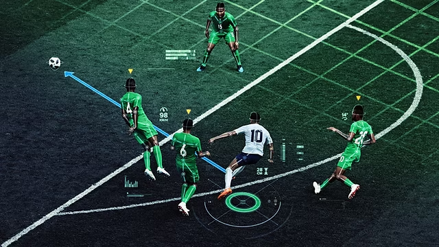

Spatiotemporal Tracking & Trajectory Analysis
At Kennedy Lab, I work with high-frequency jellyfish tracking data from videos with 500,000+ frames per recording. I clean, validate, and structure large-scale optical-flow outputs into time-series trajectory datasets and build visualizations to support behavioral analysis.
FieldView: Tactical Viewer

A soccer analytics app that won 3rd place in a club competition. I helped build pipelines for spatiotemporal player tracking data and engineered features such as Expected Threat (xT), Pitch Control, and Pass Completion
Probability, while prototyping interactive exploration in Streamlit.
Understanding the Causes of U.S. Power Outages

For my DSC 80 final project, I built reproducible data pipelines across climate, infrastructure, and outage datasets, performed feature engineering, and trained a classifier to predict outages longer than 24 hours, improving F1 score from 0.43 to 0.66.
Language Modeling & Text Mining
Built unigram and n-gram language models, applied text cleaning and normalization, and used TF-IDF and cosine similarity for document representation and comparison.
Multimedia Processing & Classification App
Developed a Python-based image and audio processing application with modular pipelines, feature extraction, and KNN-based classification.
Analyzing Patterns in IMDb Films
Analyzed entertainment metadata to identify trends across film duration,genre, and release year using exploratory data analysis, regression, and hypothesis testing.
Distracted Drivers Machine Learning Project
Built KNN, MLP, and CNN models on 25,000+ labeled images, focusing on preprocessing, feature extraction, and model evaluation for real-world performance.